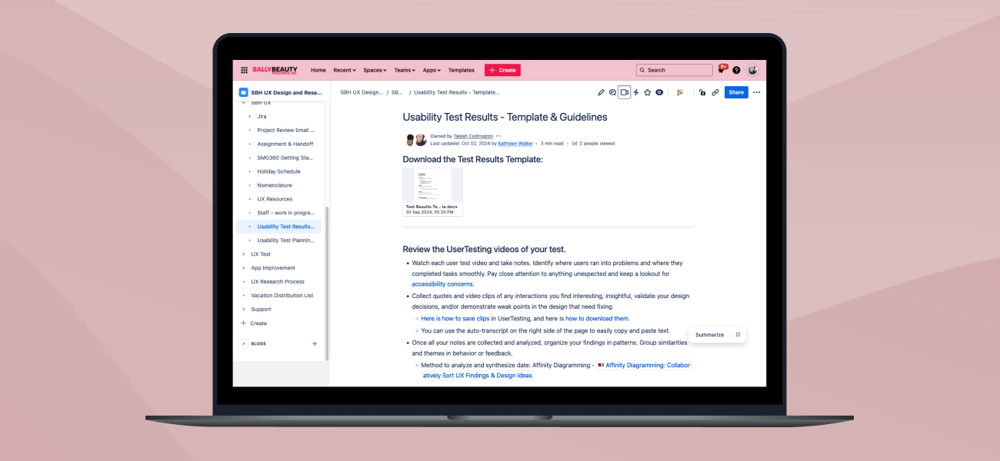

UX Writing & Documentation
I create educational content and internal documentation that bridge knowledge gaps for both users and teams. These writing projects demonstrate my ability to translate complex technical information into accessible guides, identify unmet needs, and take initiative on solutions.
PROJECT INFO
- Company: Sally Beauty
- Year: 2021-2024
- Platforms: PDF Guides, Confluence
MY ROLE
- UX Writer
- Content Strategist
- Documentation Creator
- Educational Content Designer
CROSS-FUNCTIONAL COLLABORATION
- UX Design Team
- In-House Color Experts
- Marketing Team
- Product Team
KEY SKILLS
- Technical Writing
- Content Strategy
- Information Architecture
- Educational Design
- Process Documentation
At a Glance:
These projects demonstrate my ability to translate complex technical information into accessible content, create documentation that scales team capabilities, take initiative on projects that improve user and team experiences, and write with clarity and purpose for different audiences.
The result? Both initiatives addressed critical knowledge gaps: one for customers struggling with professional-grade hair color products, and another for a design team needing standardized research processes. While the DIY guide wasn't officially launched due to shifting priorities, it informed future content strategy. The user testing documentation became a foundational resource that democratized research capabilities across the UX team and improved the quality and consistency of our research practices.
Project 1: DIY Hair Color 101
Educational Guide

DIY Hair Color 101 Educational Guide
The Problem
Before Licensed Colorist on Demand launched, Sally Beauty faced a significant challenge in educating customers about professional-grade hair color. Sally Beauty is the only major retailer offering professional cosmetology-grade products to the general public, which is very different from the standard box dye most people are familiar with. This created a substantial barrier between many potential customers and the products they could use.
The Initiative
I took it upon myself to research, write, and design a comprehensive downloadable PDF instruction manual that would demystify professional hair coloring for complete beginners. This was a self-directed project born from observing customer hesitation and recognizing a user need that should be addressed.
Content Strategy & Research
I conducted extensive research and collaborated with in-house color experts to outline a content strategy:
The Knowledge Gap
What professional colorists know that DIY customers don't
Customer Pain Points
Where confusion typically derails the coloring process
Safety Concerns
Critical information needed to prevent hair damage or skin injury
Product Differentiation
How to explain professional-grade products vs. box color
The Content
The guide covered advanced professional concepts translated for beginners:
- Color Theory: How to read and understand color tones and levels
- Developer Selection: Choosing the right developer strength for different coloring goals
- Application: Step-by-step instructions for applying professional color formulas
- Pre-Lightening with Bleach: Safety protocols and proper procedures for lightening hair
- After-Color Maintenance: Tips for preserving results and maintaining hair health
Writing Approach
The challenge was making professional cosmetology knowledge accessible without oversimplifying or neglecting crucial information. I used:
- Progressive Disclosure: Starting with basic concepts and building from there
- Visual Aids: Diagrams and color charts to reinforce written explanations
- Clear Warnings: Prominent safety callouts for potentially damaging mistakes
- Conversational Tone: Friendly, encouraging language that reduced intimidation
Example of a visual aid to help users understand the concept of hair levels and how to select the right developer strength
Outcome
While the guide was never officially launched due to shifting marketing priorities toward the marketing team's SEO-focused content hub strategy, the project demonstrated design thinking and proactive problem-solving. The research and content strategy I developed helped inform articles for future content, and the guide serves as a strong example of my ability to create educational UX content.
Project 2: Confluence
User Testing Documentation
The Challenge
When Sally Beauty dissolved their dedicated UX Research team, the responsibility for conducting user testing shifted to the UX design team. This created an immediate knowledge gap. While some designers had research experience, others did not, and we had no standardized process for conducting, documenting, or analyzing user tests.
Without proper documentation, the team risked:
Different designers using different approaches
Poor test design leading to unreliable data
Reinventing the wheel for each test
New designers unable to contribute to research efforts
The Solution
I wrote user testing guidelines for the Sally Beauty UX Confluence that would serve as both educational resource and operational handbook. The goal was to democratize research capabilities across the design team while maintaining quality standards.
Documentation Structure
Confluence User Testing Documentation
I organized the guidelines into three core sections mirroring the research workflow:
- Creating a Test Plan: Defining clear research objectives and hypotheses, determining test scenarios, writing clear task instructions, overview of testing methodologies, identifying participant criteria, and writing effective screening questions.
- Building & Launching a User Test: UserTesting.com setup, correctly setting up a Figma prototype for testing, pilot testing to identify issues before launch, and participant recruitment best practices.
- Analyzing the Results: Organizing and reviewing recordings/responses, identifying patterns and pain points, quantitative analysis approaches, synthesizing findings into actionable insights, creating effective research presentations, and documenting results for future reference.
Writing Approach
The documentation needed to serve multiple audiences, from experienced designers looking for a quick reference to novices who need step-by-step guidance. I wrote using a modular structure, with sections that could be referenced independently. Practical examples were used to illustrate real test plans and scenarios from past projects. I included resource links of curated external articles and tools for further learning where applicable.
Impact
This documentation became the foundational resource for the UX team's research capabilities:
Team Development
Designers previously unfamiliar with user testing gained valuable skills.
Quality Consistency
Standardizing our research practices ensured reliable, comparable results across projects.
Efficient Onboarding
New team members could quickly learn research processes and hit the ground running.
Stakeholder Confidence
Consistent, well-documented research increased trust in UX recommendations.
The guidelines remained a core reference throughout my time at Sally Beauty and became part of the onboarding process for new designers.